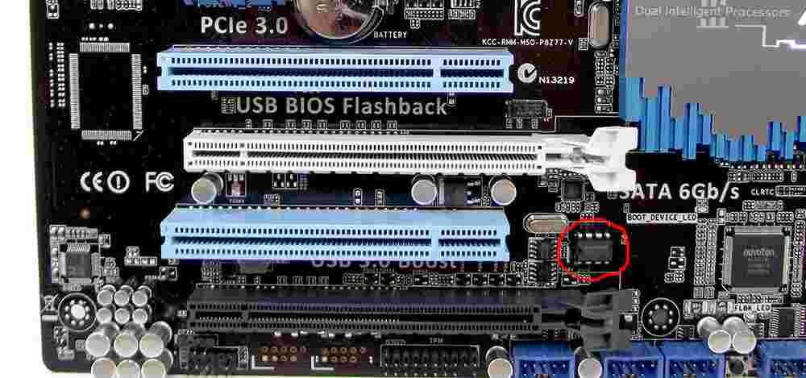

ASUS P8Z77-V
This page describes how to run coreboot on the ASUS P8Z77-V.
Flashing coreboot
Type |
Value |
|---|---|
Socketed flash |
yes |
Model |
W25Q64FVA1Q |
Size |
8 MiB |
Package |
DIP-8 |
Write protection |
yes |
Dual BIOS feature |
no |
Internal flashing |
no |
The flash IC is located between the black and white PCI Express x16 slots (circled):

How to flash
The main SPI flash cannot be written because the vendor firmware disables BIOSWE and enables BLE/SMM_BWP flags in BIOS_CNTL for their latest BIOSes. An external programmer is required. You must flash standalone, flashing in-circuit doesn’t work. The flash chip is socketed, so it’s easy to remove and reflash.
Working
PS/2 keyboard with SeaBIOS 1.14.0 and Debian GNU/Linux with kernel 5.10.28
Integrated Ethernet NIC
S3 Suspend to RAM
USB2 on rear and front panel connectors
USB3 (Z77’s and ASMedia’s works)
Integrated SATA of Z77
Integrated SATA of ASM1061 (works under GNU/Linux but not under SeaBIOS)
CPU Temp sensors (tested PSensor on GNU/Linux)
TPM on TPM-header (tested tpm-tools with TPM 1.2 Infineon SLB9635TT12)
Native raminit
Integrated graphics with libgfxinit (VGA/DVI-D/HDMI tested and working)
PCIe in PCIe-16x/8x slots (tested using an S3 Matrix GPU)
Debug output from serial port
Atheros AR9485 half-height mini PCIe WNIC adapted with Wi-Fi Go! Adapter
Default PCIe config (PCIEX_16_3 as 1x, PCIe Port 4 to ASM1061 SATA, see below for other potential options)
Untested
EHCI debugging
S/PDIF audio
PS/2 mouse
Not working
PCIEX_1_2 (expected under default PCIe config)
Other PCIe configs (see below)
PCIe config
On Asus vendor firmware, other than the default config already supported here, there remain another two configs: “PCIEX_16_3 as x4, with PCIEX_1_1, PCIEX_1_2 and onboard ASM1061 disabled” and “PCIEX_16_3 as x1, but PCIe Port 4 to PCIEX_1_2, with onboard ASM1061 disabled”.
Configuring PCIEX_16_3 as x4 needs to program 0x3 to the LSB of PCHSTRP9, but also needs to configure GPIOs in the Super I/O chip different than the default config in this board’s override tree.
Configuring PCIe Port 4 to PCIEX_1_2 needs to configure GPIOs in the Super I/O chip differently than the default config.
I have tried a lot, but sadly I am unable to produce the same result as the vendor firmware.
Asus Wi-Fi Go!
Asus Wi-Fi Go! has several versions. P8Z77-V has the earliest version. See Asus Wi-Fi Go! v1.
Technology
Northbridge |
|
Southbridge |
bd82x6x |
CPU |
model_206ax |
Super I/O |
Nuvoton NCT6779D |
EC |
None |
Coprocessor |
Intel Management Engine |